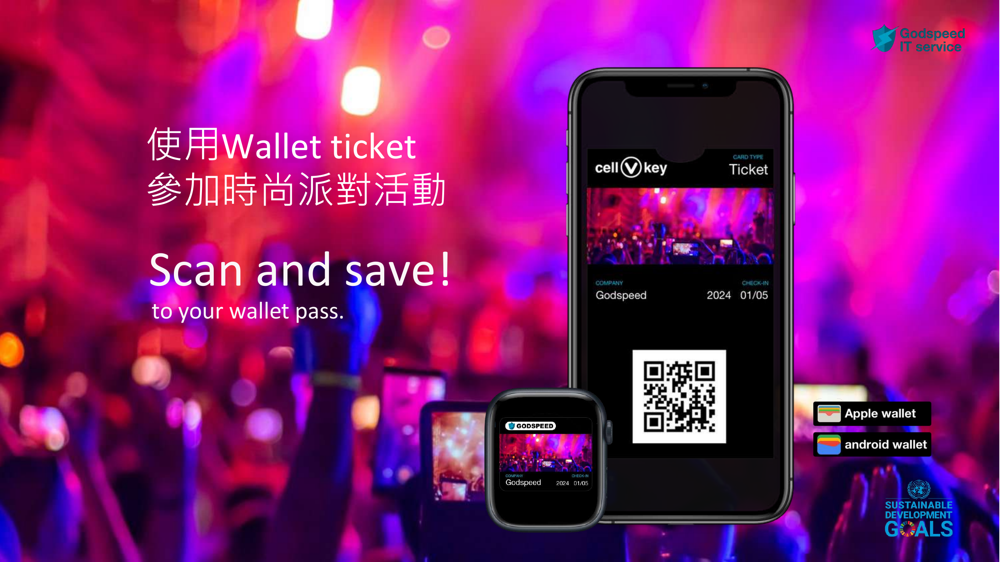
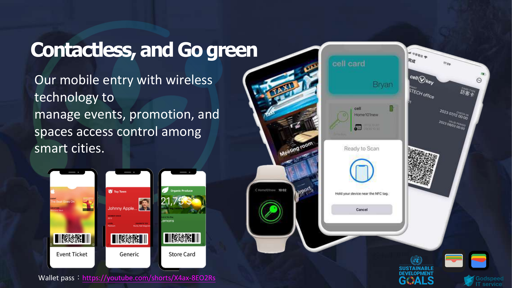

大型場館的入場流程，是數位票券最容易被考驗的場景之一。球賽、演唱會、展會或大型活動，入場時間往往集中在短短一兩個小時內。只要入口慢一點，排隊就會外溢；只要網路卡一下，整個閘口就會變成壓力點。
所以球場與大型場館談智慧通行，不能只問「有沒有電子票」或「能不能掃 QR Code」。真正要問的是：高峰人流能不能通過？VIP、媒體、工作人員與一般觀眾能不能分流？票券被轉傳或重複使用時能不能處理？網路不穩時，閘口能不能繼續驗證？
從 Godspeed 的 sport wallet and access control 簡報來看，這類方案的重點是把 Wallet 票券、NFC/BLE、QR Code、閘口設備與邊緣驗證接在一起。它不是單一票券工具，而是場館入口的權限系統。
場館入場的壓力，來自時間與人流
一般零售或旅宿場景，使用者抵達時間比較分散；球場和大型活動則完全不同。觀眾通常在開場前集中抵達，現場入口同時承受大量票券驗證、安檢、人員分流與例外處理。
傳統票券流程常見幾個問題。第一是速度：紙票、截圖、簡訊條碼或 App 票券都需要使用者翻找。第二是人力：入口需要大量工作人員協助查驗與引導。第三是系統依賴：若驗證系統過度依賴即時雲端或主機，網路壅塞就可能直接影響進場。
因此，智慧場館的目標不是做一個更漂亮的票券，而是讓「取得憑證、抵達入口、快速驗證、紀錄回流」這條流程在高峰時仍然穩定。
Wallet 票券把入口前移到手機裡

Wallet 票券的好處，是它把票券放在使用者已經熟悉的手機入口裡。購票或報名後，使用者可以把票券存入 Apple Wallet 或 Android Wallet；抵達現場時，不需要再打開某個陌生 App，也不需要回去搜尋 Email 或簡訊。
這對大型場館很重要，因為入口時間非常珍貴。每位觀眾少花幾秒找票，整體排隊就會少很多。尤其當票券能搭配 NFC、BLE 或 QR Code，閘口就可以依照不同設備條件快速驗證。
Wallet 票券也有助於降低紙本票券和臨時證件的使用量。對場館來說，這不只是環保話術，而是營運成本：少印票、少補證、少處理遺失，也少一部分人工核對工作。
分區權限比單純入場更重要
大型場館裡，不是每個人都只需要「進場」。一般觀眾進入球迷通道，VIP 可能進入包廂或貴賓區，媒體有採訪區域，工作人員有後場和臨時出入口，供應商可能只在特定時間段可以進出。
如果票券系統只能判斷「有效 / 無效」，就不夠支撐場館營運。智慧通行需要更細的權限模型：不同身份、不同票種、不同時段、不同入口、不同區域，都要能被定義。
這也是虛擬金鑰概念有用的地方。同一個 Wallet 憑證背後，可以對應一組權限：進哪個門、去哪些區域、什麼時間有效、使用後是否留下紀錄。使用者看到的是手機票券，場館後台管理的其實是權限。
邊緣驗證是大型場館的關鍵備援

大型活動現場很容易遇到網路壅塞。觀眾同時上傳照片、直播、傳訊息，場館內外的網路環境都可能不穩。如果每一次入場驗證都必須等雲端回應，入口就會變成系統風險最高的地方。
邊緣驗證的重點，是把必要判斷放到現場。閘口或讀取設備可以在本地完成基本驗證，雲端負責後續同步與管理。這樣即使網路短暫不穩，已授權的觀眾仍能通行，入口不會因為單點網路問題停擺。
對大型場館來說，這和旅宿門禁的邏輯很像：雲端適合同步、查詢和管理，但現場入口需要快速、穩定、可備援的執行能力。
導入智慧場館通行前，先檢查 7 件事
如果場館要導入 Wallet 票券與智慧通行，建議先檢查這七件事。
- 票券來源：售票系統、活動報名系統或會員系統能不能產生 Wallet 憑證。
- 驗證方式：現場採 QR Code、NFC、BLE，還是多種方式並行。
- 入口分流：一般觀眾、VIP、媒體、工作人員與供應商是否有不同入口。
- 分區權限：票種、身份、時段和區域能不能被清楚定義。
- 邊緣備援：網路壅塞或雲端延遲時，已授權票券能不能繼續驗證。
- 例外處理：票券轉讓、重複使用、手機沒電、身份錯誤時，現場如何處理。
- 紀錄回流：入場、離場、分區使用和異常事件能不能回到後台。
這些問題如果沒有先回答，電子票券只會把紙票變成手機畫面。回答清楚後，Wallet 票券才會變成場館的智慧入口。
從票務系統，走向場館權限系統
球場與大型場館的下一步，不是把所有票券都改成 QR Code，而是把票務、會員、身份、分區、閘口與後台紀錄接成同一套權限系統。
對觀眾來說，體驗會變得更簡單：購票後存進 Wallet，抵達時快速通行，進入正確區域。對場館來說，營運會更可控：每張票券背後都有權限規則，每個入口都有紀錄，每個例外都有處理流程。
這就是智慧場館通行真正的價值。它不是把紙票換成手機，而是讓大型場館在高人流、高分區、高例外的現場，仍然能維持快速、清楚、可追蹤的通行管理。